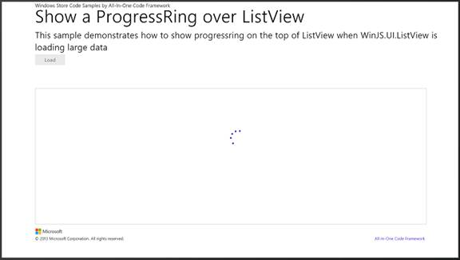

How to show progress bar on the top of ListView when it is loading large data

How to get the progress ring to display in the period when ListView is loading large data (JSWindowsStoreAppProgressOverListView)
Introduction
The sample demonstrates how to get the progress ring to display in the period when WinJS.UI.ListView control is loading large data. After launching the app, click "load" button to load sample data into ListView control.
Build the Sample
1. Start Visual Studio 2012 and select File > Open > Project/Solution.
2. Go to the directory in which you download the sample. Go to the directory named for the sample, and double-click the Microsoft Visual Studio Solution(.sln) file.
3. Press F7 or use Build > Build Solution to build the sample.
Running the Sample
1. Press Ctrl+F5 or F5 to run the project.
2. After the sample is launched, the screen as shown below will display.

3. Please click "Load" button to load sample data into ListView, the following screen will display:

4. When the data loading is finished, the progress ring will be invisible and the data will be shown in WinJS.UI.ListView control.
Using the Code
The code snippet below shows the HTML UI.
<body>
<div id="rootGrid">
<div id="title">
<p class="AppLogo">Windows Store Code Samples by All-In-One Code Framework</p>
<p class="AppName">Show a ProgressRing over ListView</p>
<p class="AppDescription">This sample demonstrates how to show progressring on the top of ListView when WinJS.UI.ListView is loading large data</p>
</div>
<div id="content">
<div>
<button id="loadButton" class="action">Load</button>
</div>
<div id="urlerror">
<label >This Url is not valid.</label>
</div>
<div class="output">
<!-- Template -->
<div id="myItemTemplate" data-win-control="WinJS.Binding.Template">
<div class="smallListIconTextItem">
<img src="#" class="smallListIconTextItem-Image" data-win-bind="src: picture" />
<div class="smallListIconTextItem-Detail">
<h4 data-win-bind="innerText: title"></h4>
<h6 data-win-bind="innerText: text"></h6>
</div>
</div>
</div>
<!-- Note the 'loadingBehavior', 'pagesToLoad', 'automaticallyLoadPages', and 'pagesToLoadThreshold' properties-->
<div id="listView"
class="win-selectionstylefilled"
data-win-control="WinJS.UI.ListView">
</div>
<div id="progressContain">
<progress id="loadprogressring" class="win-ring" />
</div>
</div>
</div>
<div id="footer">
<div>
<img src="/images/microsoft.png"/><br/>
</div>
<div id="company">© 2013 Microsoft Corporation. All rights reserved.
<a href="http://blogs.msdn.com/b/onecode">All-In-One Code Framework</a>
</div>
</div>
</div>
</body>
<body> <div id="rootGrid"> <div id="title"> <p class="AppLogo">Windows Store Code Samples by All-In-One Code Framework</p> <p class="AppName">Show a ProgressRing over ListView</p> <p class="AppDescription">This sample demonstrates how to show progressring on the top of ListView when WinJS.UI.ListView is loading large data</p> </div> <div id="content"> <div> <button id="loadButton" class="action">Load</button> </div> <div id="urlerror"> <label >This Url is not valid.</label> </div> <div class="output"> <!-- Template --> <div id="myItemTemplate" data-win-control="WinJS.Binding.Template"> <div class="smallListIconTextItem"> <img src="#" class="smallListIconTextItem-Image" data-win-bind="src: picture" /> <div class="smallListIconTextItem-Detail"> <h4 data-win-bind="innerText: title"></h4> <h6 data-win-bind="innerText: text"></h6> </div> </div> </div> <!-- Note the 'loadingBehavior', 'pagesToLoad', 'automaticallyLoadPages', and 'pagesToLoadThreshold' properties--> <div id="listView" class="win-selectionstylefilled" data-win-control="WinJS.UI.ListView"> </div> <div id="progressContain"> <progress id="loadprogressring" class="win-ring" /> </div> </div> </div> <div id="footer"> <div> <img src="/images/microsoft.png"/><br/> </div> <div id="company">© 2013 Microsoft Corporation. All rights reserved. <a href="http://blogs.msdn.com/b/onecode">All-In-One Code Framework</a> </div> </div> </div> </body>
The following cod e snippet shows how to get the progress ring to display during the period when ListView is loading large data, and then set the progress ring to be invisible after the data loading is finished.
app.onactivated = function (args) {
if (args.detail.kind === activation.ActivationKind.launch) {
if (args.detail.previousExecutionState !== activation.ApplicationExecutionState.terminated) {
// TODO: This application has been newly launched. Initialize
// your application here.
} else {
// TODO: This application has been reactivated from suspension.
// Restore application state here.
}
args.setPromise(WinJS.UI.processAll().then(function complete() {
// retrieve button
loadBtn = document.getElementById("loadButton");
// register Click Event for load button
loadBtn.addEventListener("click", loadButtonClick, false);
}));
}
};
// load data into listview control
function loadButtonClick() {
// clear the datasource
document.getElementById("listView").winControl.itemDataSource = null;
// set load button disabled
loadBtn.disabled = true;
// set progress be visible
document.getElementById("loadprogressring").style.visibility = "visible";
// simulate listview to load large data. because the listview load data synchronously
setTimeout(loaddata, 2000);
}
function loaddata()
{
// get listview element
var listviewElement = document.getElementById("listView");
// get WinJS.UI.ListView control object
var listViewControl = listviewElement.winControl;
// binding data to ListView control
listViewControl.itemDataSource = myData.dataSource;
listViewControl.itemTemplate = document.getElementById("myItemTemplate");
listViewControl.layout = new WinJS.UI.GridLayout();
// force update the layout of listview control to display the binding data
listViewControl.forceLayout();
// set load button enable and set progress be invisible
loadBtn.disabled = false;
document.getElementById("loadprogressring").style.visibility = "collapse";
}
app.onactivated = function (args) {
if (args.detail.kind === activation.ActivationKind.launch) {
if (args.detail.previousExecutionState !== activation.ApplicationExecutionState.terminated) {
// TODO: This application has been newly launched. Initialize
// your application here.
} else {
// TODO: This application has been reactivated from suspension.
// Restore application state here.
}
args.setPromise(WinJS.UI.processAll().then(function complete() {
// retrieve button
loadBtn = document.getElementById("loadButton");
// register Click Event for load button
loadBtn.addEventListener("click", loadButtonClick, false);
}));
}
};
// load data into listview control
function loadButtonClick() {
// clear the datasource
document.getElementById("listView").winControl.itemDataSource = null;
// set load button disabled
loadBtn.disabled = true;
// set progress be visible
document.getElementById("loadprogressring").style.visibility = "visible";
// simulate listview to load large data. because the listview load data synchronously
setTimeout(loaddata, 2000);
}
function loaddata()
{
// get listview element
var listviewElement = document.getElementById("listView");
// get WinJS.UI.ListView control object
var listViewControl = listviewElement.winControl;
// binding data to ListView control
listViewControl.itemDataSource = myData.dataSource;
listViewControl.itemTemplate = document.getElementById("myItemTemplate");
listViewControl.layout = new WinJS.UI.GridLayout();
// force update the layout of listview control to display the binding data
listViewControl.forceLayout();
// set load button enable and set progress be invisible
loadBtn.disabled = false;
document.getElementById("loadprogressring").style.visibility = "collapse";
}
More Information
Data binding (Windows Store apps using JavaScript and HTML)
http://msdn.microsoft.com/en-us/library/windows/apps/hh758311.aspx
WinJS.UI.ListView object
http://msdn.microsoft.com/en-us/library/windows/apps/br211837.aspx
Adding progress controls (Windows Store apps using JavaScript and HTML)
http://msdn.microsoft.com/en-us/library/windows/apps/hh465428.aspx